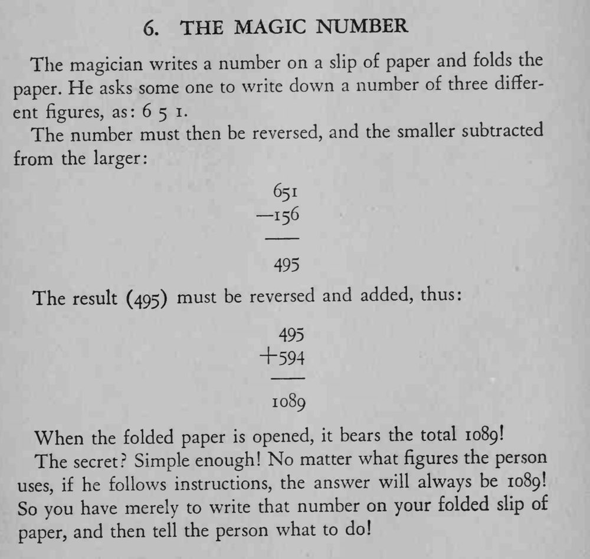

观众任写一个三位数，倒过来相减，再把结果倒过来相加，无论怎么算，答案都是 1089。
只要按步骤算，结果必是 1089，所以预言可以放心先写。

The magician writes a number on a slip of paper and folds the paper. He asks some one to write down a number of three different figures, as: 6 5 1. The number must then be reversed, and the smaller subtracted from the larger: The result (495) must be reversed and added, thus: When the folded paper is opened, it bears the total 1089! The secret? Simple enough! No matter what figures the person uses, if he follows instructions, the answer will always be 1089! So you have merely to write that number on your folded slip of paper, and then tell the person what to do!